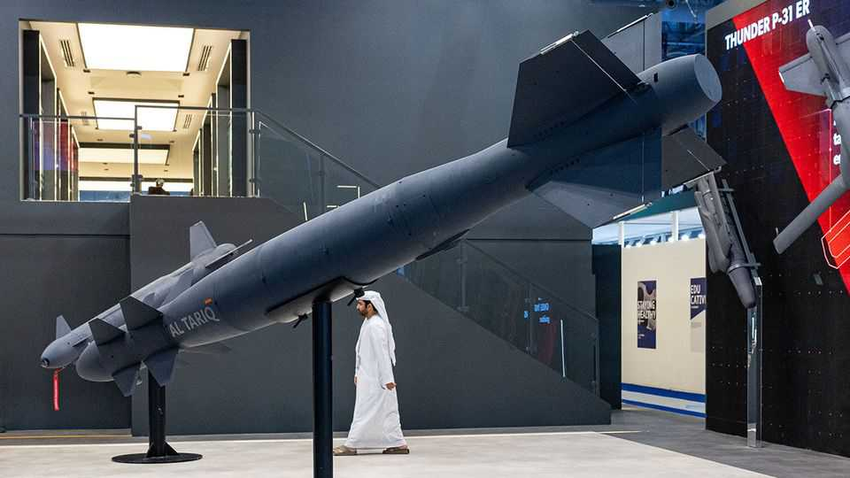

A new defence champion is rising from the Gulf
The region’s rulers want to reduce their dependence on Western arms
June 4th 2026

THE PETRO-MONARCHIES of the Gulf are celebrated big spenders—not least by the West’s defence industry. Their oil wealth pays for about a fifth of global arms imports, with a shopping list ranging from fighter jets to frigates. In a noisy, volatile neighbourhood, safety comes at a price.
Now the rich rulers are nurturing their own defence industries, hoping to reduce their reliance on the West. Not surprisingly, the Iran war has hardened this ambition. Saudi Arabia intends that by 2030 half its arms budget will be spent at home, up from a quarter today, and that Saudi Arabia Military Industries (SAMI) will be in the world’s top 25 defence firms by revenue. Yet so far the state-owned enterprise, which has joint ventures with Boeing, an American aerospace giant, among others, mainly produces spare parts for American fighter jets and a few lines of armoured vehicles. Qatar’s Barzan Holdings is likewise ambitious but small.
It is in the United Arab Emirates (UAE) where momentum is strongest. In 2019 around 25 Emirati companies were merged to form the EDGE Group, a national defence champion. It has since bought majority stakes in several foreign firms, and in May agreed to acquire 80% of Costruzioni Motori Diesel, an Italian engine-maker. It has stakes of 51% in ventures with two other Italian firms, Leonardo (in a range of areas) and Fincantieri (in shipbuilding), and a partnership with Germany’s Rheinmetall (in air defence). In November it formed a joint venture with Anduril, a fast-rising American defence-tech firm, to make drones for the UAE and its allies.
Last year EDGE’s revenue topped $5bn, with “healthy” profit margins. Orders of about $8bn brought the total outstanding to more than $20bn. Hamad al-Marar, the company’s chief executive, estimates revenue will rise by a fifth over the next two years as these are fulfilled. Already it is among the world’s top three makers of precision-guided munitions.
EDGE does not aim to localise everything and anything; rather, it prioritises systems and components deemed critical or whose supply chains might prove insecure. At the same time, its ambition is growing. The firm was already focused on owning IP. Now, says an executive, it is increasingly intent on producing it, too.
EDGE’s expansion has led to a reduction in the UAE’s share of global arms imports, to 2.7% in 2021-25 from 3.5% in 2016-20, according to SIPRI, a Swedish think-tank. But the company is not only producing for its home market. In fact it exports close to three-quarters of what it makes, to countries in Latin America, Africa and Asia. Even as regional competition rises, the state of geopolitics means there will be more places to export to, Mr Marar says. In January his company signed a joint-venture deal with Barzan, and it has licensed its vehicle technology to SAMI.
The UAE’s growing defence prowess has stood it in good stead in the war. Iran has struck at the Emirates far more often than at Saudi Arabia or Qatar. About 80% of Iran’s incoming Shahed drones were tackled by Emirati products, officials say. EDGE’s electronic-warfare systems kicked into action, spotting incoming missiles and drones, and setting off jamming and spoofing, working in concert with American anti-ballistic-missile systems.
The upside is that EDGE’s technology is now combat-tested, says Mr Marar. Of course, the war has created challenges as well: supplies stuck in the blocked Strait of Hormuz, for instance, are bound to delay production plans. Still, the Emiratis’ efforts over the past few years to indigenise defence production now look farsighted. Even with powerful allies and brotherly neighbours, greater self-sufficiency is valuable. The UAE’s defence champion might just give it the edge it needs. ■
To track the trends shaping commerce, industry and technology, sign up to “The Bottom Line”, our weekly subscriber-only newsletter on global business.